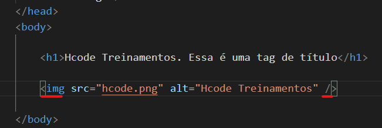
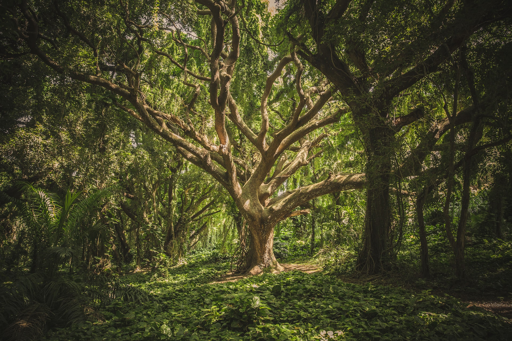

A tag img é usada para incorporar uma imagem em uma página HTML.
As imagens não são tecnicamente inseridas em uma página da web; as imagens estão vinculadas a páginas da web.

O escopo das img tags é adicionar uma única imagem interna como parte de um conteúdo específico.
Ele deve ser usado em um contêinercomo um parágrafo e onde a imagem exibida é necessária para que o texto nesse contêiner seja melhor compreendido.
Isso significa que não se destina a coisas como ícones, padrões de fundo ou outras imagens que servem apenas como decoração. Para decorações, será melhor usar algo como uma background-image propriedade CSS.
figure & figcaption
Definição e uso
O Elemento HTML blockquote (ou Elemento HTML de citação de bloco) indica que o texto incluído é uma longa citação. Normalmente, este é processado visualmente pelo recuo. A URL para a fonte da citação pode ser dada usando o atributo cite.
Por Benjamin Voros, Moema - ItáliaPor Garret Parker, Moraine Lake - CanadáPor Jonatan Pie, Stakkholtsgja canyon - iceland

Por Veeterzy, Tree in forest of plants
picture
Definição e uso
A tag picture oferece aos desenvolvedores da Web mais flexibilidade na especificação de recursos de imagem.
O uso mais comum do elemento picture será para direção de arte em designs responsivos. Em vez de ter uma imagem que é dimensionada para cima ou para baixo com base na largura da janela de visualização, várias imagens podem ser projetadas para preencher melhor a janela de visualização do navegador.
O elemento picture contém duas tags: uma ou mais tags source e uma tag img.
O navegador procurará o primeiro elemento source onde a consulta de mídia corresponde à largura da janela de visualização atual e, em seguida, exibirá a imagem adequada (especificada no atributo srcset). O elemento img é necessário como o último filho do elemento picture, como uma opção de fallback se nenhuma das tags de origem corresponder.